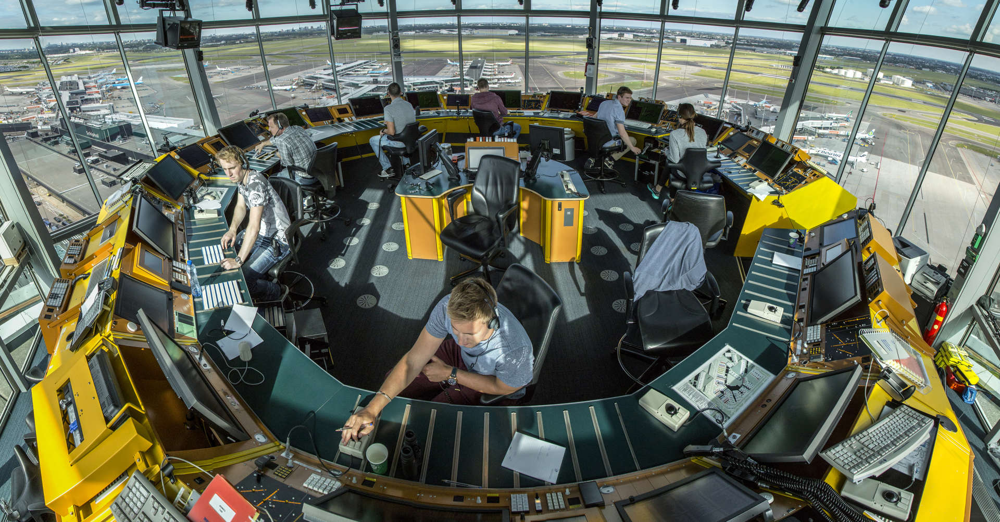
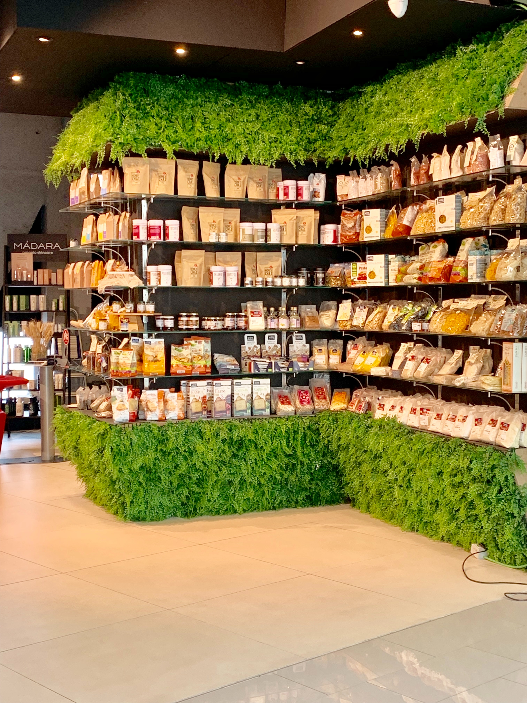

화학생명공학도에서 변리사가 되기까지..
화학생명공학도에서 변리사가 되기까지..

공군 장교에서 관제사가 되기까지..
원자력공학 학부연구생에서 한수원 입사까지..
 전자전기 공학도에서 프론트 웹 디자이너가 되기까지..
전자전기 공학도에서 프론트 웹 디자이너가 되기까지..

생명과학 대학생에서 전문 연구원이 되기까지...
요즘 젊은층의 가장 큰 고민이자 해결하기 쉽지 않은 난제는 바로 자신이 어떠한 진로를
선택해야 하고 맞는 진로를 선택하기 위해서 본인이 어떠한 것을 해야하는것과 자신의 적성에
맞는가를 확인하는 것이다. 비록 직접적인 체험같은 것은 힘들겠지만, 여러사람들의 경험이 담긴
이야기들을 통해서, 혹시 지금 자신과 같은 상황이었던 사람들은 어떠한 방식으로 자신의 진로를
정하고 무엇을 경험하여 본인이 원하는 길을 갈 수 있었는지 방향을 알려주는 나침반의 역할을
해주고 싶은 마음에 이사이트를 제작하게 되었다. 다양한 분야와 다양한 사람들의 이야기를 통해서
우리의 진로에 대한 방향성을 잡아보자.
화학생명공학도에서 변리사가 되기까지..
전자전기 공학도에서 프론트 웹 디자이너가 되기까지..